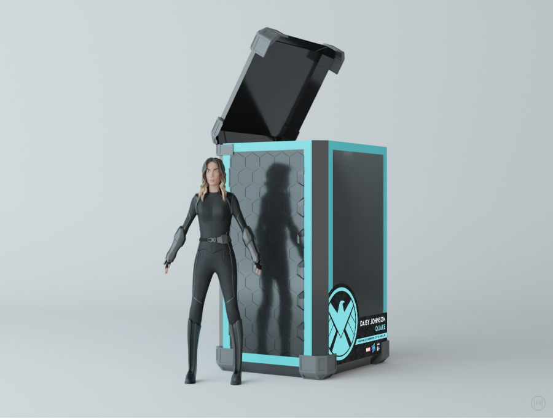
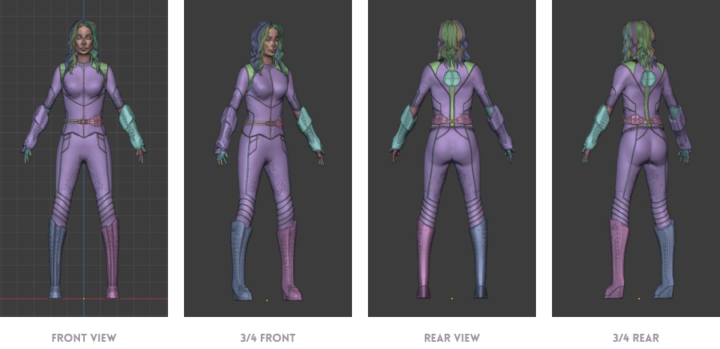
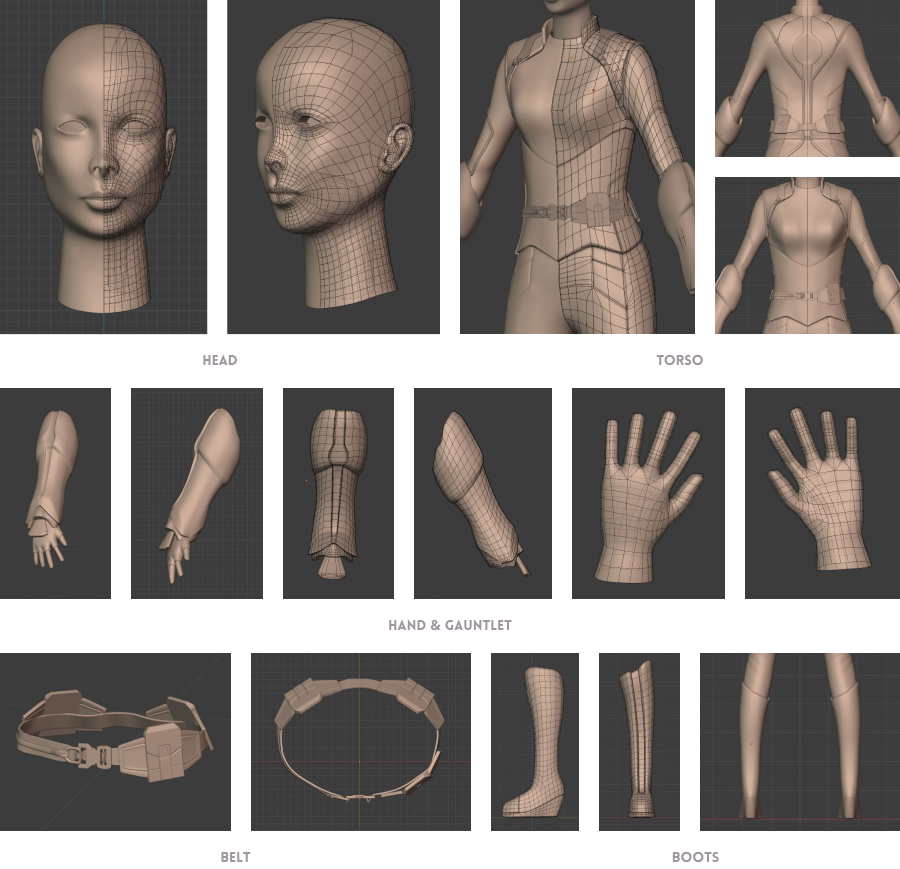
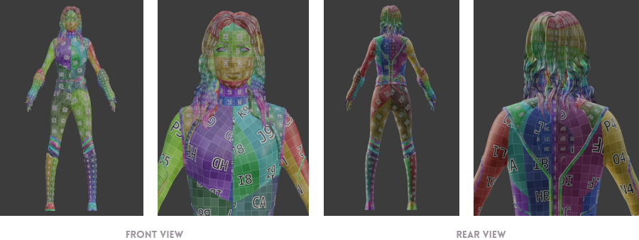
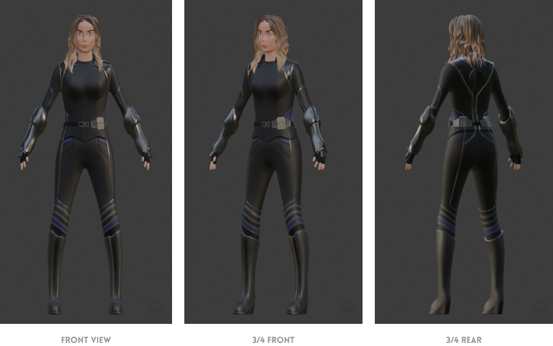
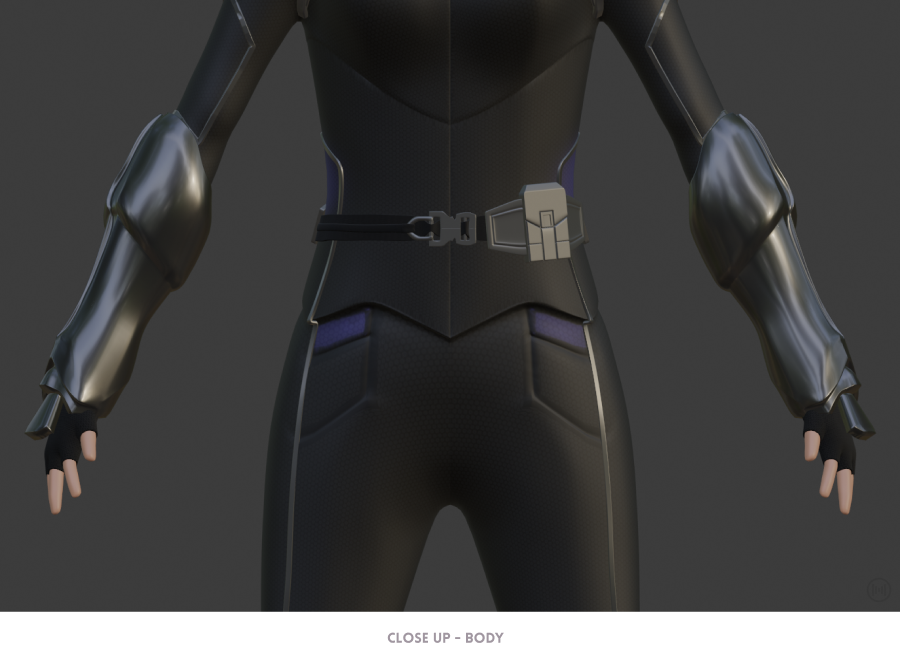
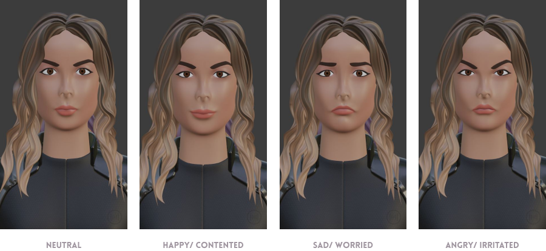
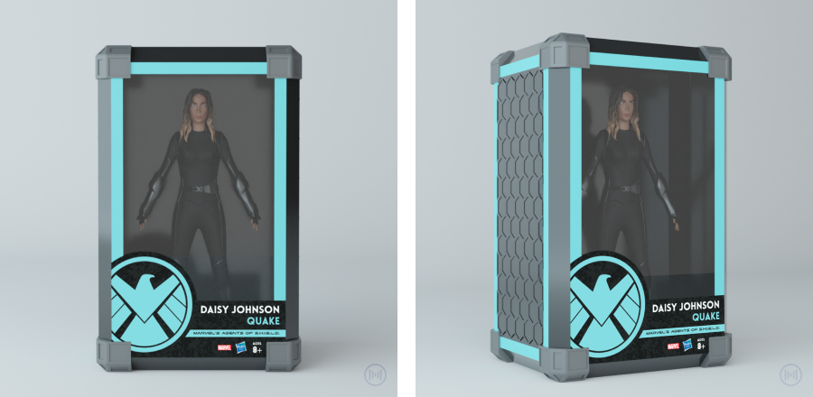
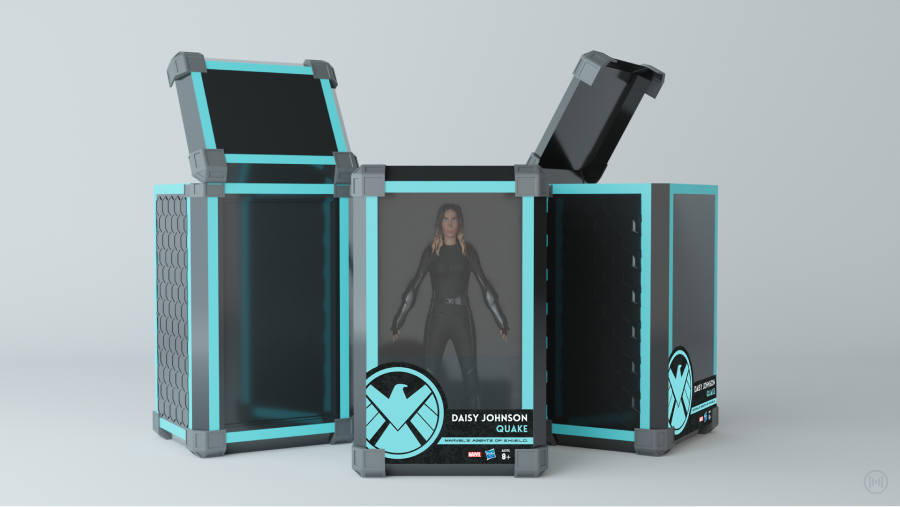

Quake (3D)
A 3D model of the Marvel's Agents of S.H.I.E.L.D. superhero character, Daisy Johnson "Quake".
Created as 3D Sculpting and Rigging course requirement.
SKILLS
Creative & Art Direction, 3D Modeling (Hard Surface and Organic), 3D Sculpting, and Graphic Design & Layout
TOOLBOX
Blender and Adobe Photoshop


3D Modeling Process
This project holds a special place in my heart as it marks my first venture into 3D sculpting of a complete humanoid character.
Sculpting
Retopology
UV Unwrapping
Materials & Texturing
 I chose to recreate my favorite character, Daisy Johnson "Quake", from a beloved sci-fi TV series. Through meticulous attention to detail, I captured her essence, from the futuristic accessories adorning her costume, such as the gauntlet and special belt, to the sleek, dark-colored attire that unmistakably portrays her as both a superhero and a special agent.
Facial Expression using Shape Keys
Action Figure Mockup
Transforming my 3D creation into a lifelike action figure fit for store shelves, I crafted a mockup packaging to enhance its appeal as a collectible item.
